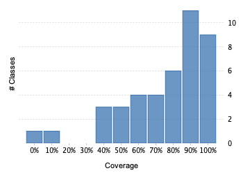
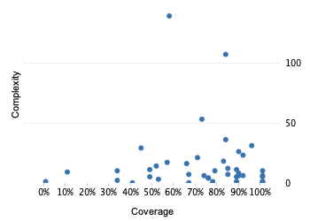

Project overview
Code coverage 49 classes, 1 978 / 2 729 elements
0.724807672,5%
Test results 210 / 210 tests 1,66 secs
1.0100%
Code metrics
634
1 719
376
49
36
4
8 215
3 958
766
0,45
4,57
7,67
12,25
2,04
Class Coverage Distribution

Class Complexity

Coverage tree map
Generating Coverage Tree Map. Please wait...

Top 20 project risks
Most complex packages
| 1. | 0.7078838370,8% |
org.devacfr.maven.skins.reflow 316 |
| 2. | 0.78674778,7% |
org.devacfr.maven.skins.reflow.snippet 246 |
| 3. | 0.633928663,4% |
org.devacfr.maven.skins.reflow.model 163 |
| 4. | 0.873134387,3% |
org.devacfr.maven.skins.reflow.context 41 |
Most complex classes
| 1. | 0.574509857,5% |
SkinConfigTool 141 |
| 2. | 0.838582783,9% |
HtmlTool 109 |
| 3. | 0.7272% |
SnippetParser 55 |
| 4. | 0.833333383,3% |
Component 38 |
| 5. | 0.950819795,1% |
SnippetContext 33 |